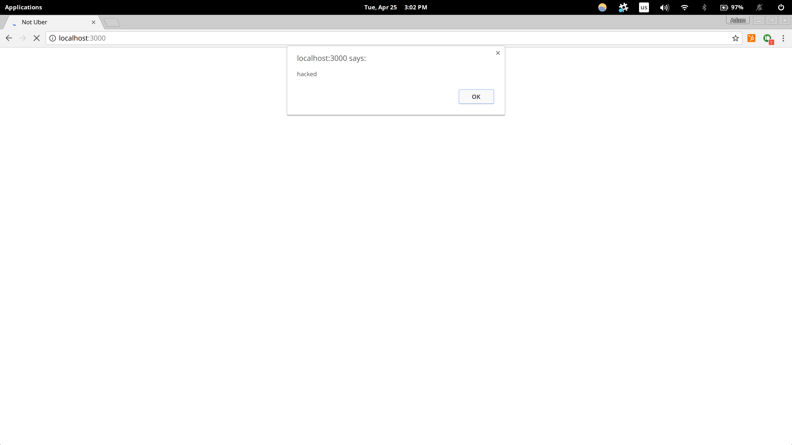
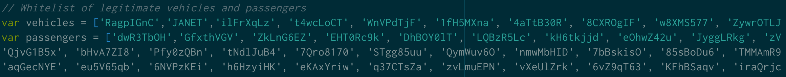
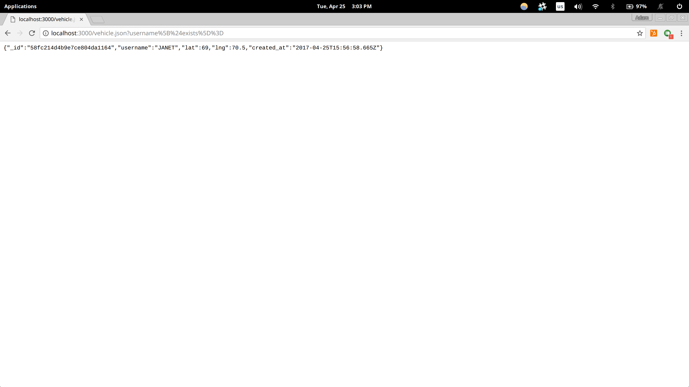
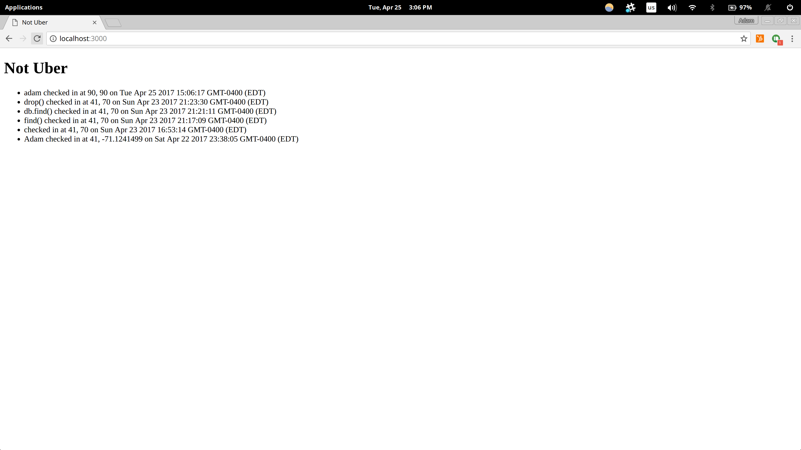

Hacking Ming's server
Alternate title: Happy HackMing
Introduction
You've all heard of Uber, the not-so-cool
ride sharing app that showed Millenials the dark side of Brogrammers and uncontrolled
free-market capitalism. Well, today, I've been hired not to hack into Uber, but into
the one and only Ming Chow's "NotUber," which, while not exactly mobile-friendly,
certainly will not be featured in any scathing New York Times articles in the near
future.
Ming's NotUber is simple: a user submits a request to
the (now hacked) server, with a username, a latitude, and a longitude. The server then
returns a list of passengers or drivers who are available and also using the app.
I was hired to find vulnerabilities in the way the server is built, and boy, did I ever.
A quick note
I didn't hack the server itself, but rather a copy of it. This copy was run locally on
my machine, and excluded a whitelist for passengers, which does exist in the actual server.
Another quick note
My original partner for this project sent me a server that was incomplete and didn't run. For
that reason, I'm hacking Ming's server, and not his. I guess, though, that a broken server
is indeed un-hackable!
Methodology
To hack Ming's server, I first did some simple probing a la "Black Box testing", that
is, I tried to break things without looking at the source code. After that, I cracked
open the ol' server.js and scanned it for vulnerabilities. I didn't use very many tools -
or at least I didn't find much success with them - but I did rely on PostMan to do a lot
of GET and POST requests for me, so that I wasn't constantly using curl's gross interface.
Abstract of Findings
The server, if it doesn't include a whitelist for passengers or drivers, is horrendously
vulnerable to Cross-Site-Scripting (XSS). Anybody can send in their username as a malicious bit of
JavaScript and render the homepage of the server unusable.
Outside of XSS, the database is pretty good, and could be strengthened with just a bit
of extra vigilance. Notably, though, any user as of right now can send a vehicle.json request
with the username slightly modified and get a dump of the first element inside the database,
which could be used maliciously for sure.
Aside from that, the server doesn't bother to authorize its users in any way. That is, even if
I'm not user JANET, I can say I am, enter a latitude and longitude, and voila, there's a new
entry in the server with JANET's name and a fake location. This could be a BIG issue if
many users realize this.
Issues Found
1. XSS

The server is hacked with XSS
What is it?
Cross-Site-Scripting, or XSS, is a notorious security flaw all over the internet.
Unfortunately, Ming's server is no exception. In the example pictured above, all I did
was send a post request to localhost:3000/submit with my username as "alert(hacked!);",
inside of two script tags, and the homepage ceased to load without first showing that alert. A more malicious
attacker could get creative, redirecting to a similar-looking page that tracks keystrokes or
credit card info. All bad stuff.
Where is it?
This issue is located in the /submit section of the server.
Is it bad, doc?
No, not if you hurry up and fix it. If you don't fix it, then you're essentially screwed.
There's no limit to what can be done to this site.
Resolution
Add a whitelist of usernames that the POST to /sumbit will accept. If the username
submitted isn't in the whitelist, don't accept it. The official server already has this
implemented, and it works:

2. Database injection

The server is hacked with database injection
What is it?
A database injection - in other words, I tricked the database into accepting
one of my sumitted usernames as a command. As you can see in the image above, I
sent a GET /vehicle.json request with a funky query string. Specifically, that string
is "/vehicle.json?username%5B%24exists%5D%3D", which translates to "/vehicle.json?username[$exists]=".
This submission makes the database release the most recent driver submitted through the POST /submit
route. In other words, you don't have to know the name of a driver to get their data. That's an issue!
Where is it?
This issue is located in the /vehicle.json section of the server.
Is it bad, doc?
Like XSS, it's not terrible, but it will be if it's not fixed. It's also a little trickier to make a
solution. If you don't fix it, this could cause a lot of issues, which I'll explain
in my next problem with the program.
Resolution
A big issue here, in case you didn't notice, is that the GET /vehicle.json request doesn't have an
equals sign after the username. If you look at the code, specifically where the username to be searched
for in the database is pulled from the query, it looks like this: var usernameEntry = request.query.username;.
I'm no databse expert, but my guess is that that behavior allows the server to interpret any old entry
as the username, including a malicioius injection, as the "username" entry.
What I think you should do, then, is, once you've found the username, before searching for it in the database,
assert that it's a string, with no non-alphanumeric characters in it. That doesn't totally solve this
vulnerability, but it should make it at least a little bit more difficult to break into. This can be done pretty
simply with some JavaScript: if(username.search(/[^A-Za-z\s]/) != -1) {alert("bad username!");}
3. No authorization
Server results before my hack

Server results after my hack (the first entry is different!)
What is it?
This is perhaps the most troubling issue this server has. There is no authorization protocol
in place for submission of any sort to the server, other than having a valid username. In other
words, as soon as I find a legit username as a driver or as a passenger, I can send totally
made-up information to the server under that username. In the two pictures above, I modified
the position of user "adam" with a simple post to /submit.
What makes this even more worrying is that, as it stands, every username that is submitted to
the server can be found very easily. All the passengers are listed on GET /, and if I wrote a
script to carry out the database injection that I detailed above and parse the results for
every new username that comes in, I can also get a list of every valid driver. From there, I can
submit over and over again using valid usernames that aren't mine and totally crap data.
I could use this to dispatch drivers to totally ridiculous locations to pick up users that
don't need a ride, or I could use it to call a car for a user who doesn't want one, so that when
they're not there to pick up their car, they get fined for being absent, as Uber does.
Where is it?
This issue is mainly in the /submit part of the server, but information used to exploit it
can be found in GET / and GET /vehicle.json.
Is it bad, doc?
Yes. This will be a bit of work to fix, but will be absolutely catastrophic if you don't fix it.
Resolution
Here's what I would do: first, notify passengers and vehicles that they're going to need to set
up a new account, with their internal username staying the same, but with a new outward-facing username,
and a password. For example, if my username right now were "JANET", I'd need to set up a new account. My
internal username would still be "JANET", but my outward-facing username, what customers would see, would be
something like "JanDrives". I also need a password: "JanetRocks01!".
Then, the server would have to be modified. In order to submit a request to ride or pick up, you'd need to submit
your inward-facing username, password, and lat and lng. If the username and password don't check out, don't let them
into the server.
GET / would, instead of showing internal usernames, show outward-facing ones. And no passwords, of course.
You'd also need to fix the database injection that I outlined above, so that people can't steal usernames of drivers
that don't belong to them.
With all this in place, you should be OK. Just be sure to encrypt everything along the way, especially passwords.
Conclusion
This could be worse, but it could also be a lot better. To be honest, I'd restructure
the whole user interface here to not allow them to see anything but other usernames.
It's too risky to allow them to get a vechicle's info. Put the whitelists in place,
make sure all user input is less risky, and clean up the interface, and you should have a
mildly safer product!
References
Thanks to StackOverflow
for the info on making sure usernames in /vehicle.json are alphabetical characters only.
Also, a nod to Will Mairs for his insight on database injection!